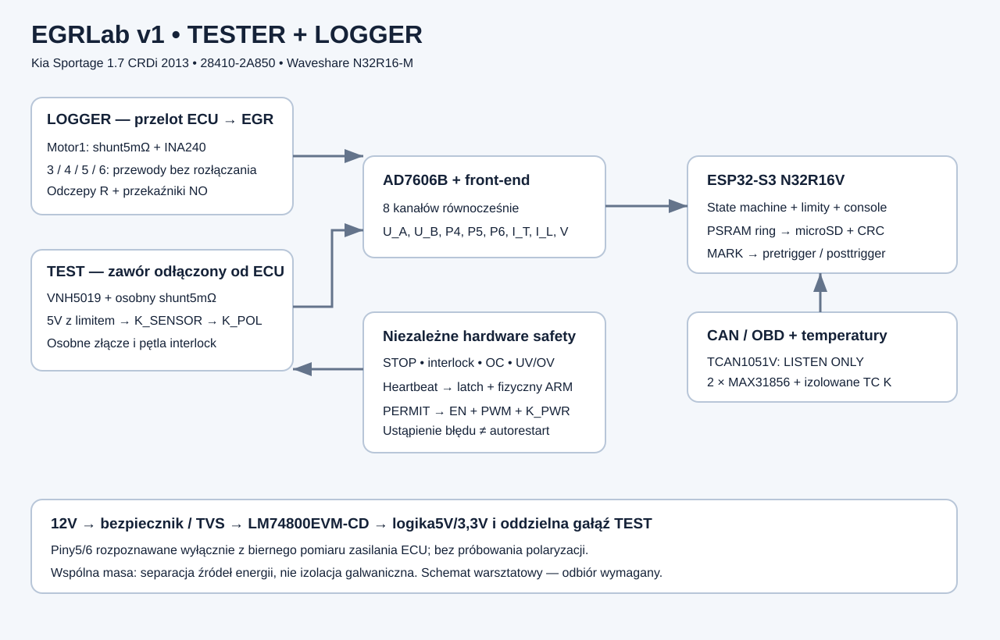

Rewizja warsztatowa A. Schematy i źródła do budowy oraz weryfikacji. Brak wykonanej PCB, kompilacji ESP-IDF i odbioru sprzętowego. Aktywny TEST domyślnie zablokowany.

Projekt elektryczny EGRLab v1, rewizja A
1. Zakres i parametry
Samochód: Kia Sportage 1.7 CRDi, 2013 r.; EGR28410-2A850.
Przyrząd do diagnostyki, bez emulatora EGR i bez modyfikacji strategii ECU. TEST wymaga odłączenia zaworu od samochodowej wiązki. LOGGER przepuszcza wszystkie pięć przewodów do zaworu nawet po utracie własnego zasilania. E-STOP działa wyłącznie na źródło energii TEST; nie rozłącza EGR sterowanego przez ECU.
| Parametr | Projekt |
|---|
| MCU | posiadana płytka Waveshare N32R16-M, moduł WROOM-2-N32R16 V |
| Zasilanie LOGGER | instalacja 12 V, normalnie 9–16 V; możliwy restart podczas rozruchu |
| Zasilanie TEST | zasilacz laboratoryjny 12 V z ograniczeniem prądu, później chronione 12 V |
| ADC | AD7606B, 8 jednoczesnych kanałów, hardware mode ±10 V |
| Próbkowanie | uruchomienie 2 kS/s; cel normalny 20 kS/s/kanał |
| PWM TEST | początkowo 1 kHz; 200 Hz–20 kHz po porównaniu z ECU |
| Prąd | dwa boczniki 5 mΩ; INA240A2; 0,25 V/A; orientacyjnie ±8 A |
| Temperatura | 2 × MAX31856 + izolowana termopara K; ~5 Hz odczyt |
| CAN | klasyczny CAN 2.0, domyślnie tylko odbiór; bez CAN FD |
| Interfejs użytkownika | konsola USB/UART, STOP, ARM, MARK; opcjonalny OLED I²C |
| Pliki | binarne próbki + JSON metadanych + NDJSON CAN/temperatura/zdarzenia |
Żaden zakres prądu ani temperatury w tym projekcie nie jest specyfikacją zaworu 28410-2A850. Przed rozszerzaniem testów określ dopuszczalne obciążenie z pomiarów sprawnego egzemplarza i danych serwisowych.
2. Architektura
ECU ─ J_LOG_ECU ─ przewody 4/5/6 i 3 wprost ─ J_LOG_EGR ─ EGR
pin1 ─ RSH_L 5mΩ ─ pin1
│ odczepy R ograniczające przy samym złączu
└─ K_MEAS_L (NO) ─ front-end ─┐
│
J_TEST ─ RSH_T / VNH5019 ─ K_PWR ─ 12V_PROT ├─ AD7606B ─ SPI2 ─ ESP32
4/5/6 ─ K_POL + K_SENSOR ─ 5V_SENSOR │ ├─ PSRAM
└─ odczepy ─ K_MEAS_T (NO) ─ front-end ───────┘ ├─ SD SPI3
├─ 2 × TC K
12V ─ fuse ─ TVS ─ LM74800EVM-CD ─ rozdział zasilania ├─ CAN RX
└─ konsola/UI
STOP + interlock + watchdog + prąd + napięcia ─ latch ─ EN/PWM/K_PWR
Dwie płytki mocy/wiązki i wspólna płytka pomiarowo-sterująca. Elektronika i SD w kabinie lub na stole; w komorze silnika wyłącznie wiązka i sondy temperatury. Wariant modułowy stosuje gotowy moduł mostka, ochrony wejścia i DC/DC. Nie wymaga wykonania przetwornicy impulsowej na płytce uniwersalnej.
3. Wiązki, identyfikacja i masa
| Styk EGR | J_LOG_ECU → J_LOG_EGR | J_TEST |
|---|
| 1 | szeregowo bocznik LOGGER, opcjonalny bocznikujący mostek serwisowy | RSH_T od OUTA |
| 2 | brak obsadzenia według założenia; nie zwierać | NC |
| 3 | przewód wprost | OUTB |
| 4 | przewód wprost + odczep pomiarowy | feedback, tylko pomiar |
| 5 | przewód wprost + odczep pomiarowy | COM1 K_POL |
| 6 | przewód wprost + odczep pomiarowy | COM2 K_POL |
Nie istnieje wspólny przełączany przewód silnika między LOGGER a TEST. Użyj różnych, mechanicznie niepasujących złączy na obudowie: LOGGER 12-stykowe, TEST 8-stykowe; oba adaptery kończą się odpowiednią wtyczką EGR. Styki mocy i przewody minimum 1,5 mm², sygnały 0,35–0,5 mm², izolacja do temperatury miejsca montażu. Typ złączy OEM dobierz po fotografii oznaczeń/mierzeniu — numer części EGR nie identyfikuje pewnie obudowy konektora.
Dodatkowa pętla TEST_PRESENT zamyka się tylko przez dedykowany adapter TEST. Każde z dwóch gniazd LOGGER ma krańcówkę NC rozwieraną po włożeniu wtyku. Połącz je szeregowo z TEST_PRESENT i kluczem TEST. Przerwany przewód blokady = brak zezwolenia. Sama identyfikacja rezystorem i firmware nie wystarczają. Włożenie adaptera LOGGER uniemożliwia uzbrojenie TEST także przy awarii programu.
AGND i DGND mają ciągłą płaszczyznę na płytce pomiarowej; jej jedyne połączenie z powrotem mocy jest przy wejściu B−. Prąd silnika nie płynie przez masę ADC. SENSOR_GND ECU nie łączy się z AGND; mierzymy jego napięcie. CAN reference i zasilanie prowadzić do tego samego odniesienia B−, nie robić dodatkowej pętli przez OBD pin 5. W LOGGER nie podłączaj uziemionego USB/oscyloskopu do innego punktu masy; do programowania na samochodzie stosuj izolowany USB lub laptop bez przewodowych połączeń z siecią/instrumentami. To wynika ze wspólnej masy urządzenia.
4. Zasilanie — wersja modułowa do złożenia
J_PWR BAT+ ─ F1 10A ──+── LM74800EVM-CD IN+ → OUT+ = VPROT
D1 SM8S24CA
|
J_PWR BAT− ────────────+────────────────────────── GND_STAR
VPROT ─ F2 1A ─ TSR 2-2450 → +5V_SYS → 1Ω / 470µF → +5V_A
VPROT ─ F3 1A ─ TSR 2-2433 → +3V3_IO (ADC VDRIVE, SD, MCP, CAN VIO)
+5V_SYS → Waveshare pin oznaczony 5V/VBUS (przez rozłączny jumper)
VPROT ─ F4 5A ─ K_PWR NO 12V/20A ─ VMOTOR → Pololu 1451 VIN
+5V_SYS ─ TPS2553 (ILIM 249kΩ) ─ K_SENSOR NO ─ +5V_SENSOR
EVM LM74800 stanowi kompletny blok odwrotnej polaryzacji i odcięcia nadnapięciowego, z dwoma MOSFET-ami. Przed obciążeniem ustaw i zmierz OVP 17,5–18,5 V zgodnie z instrukcją EVM; ustawienie fabryczne nie jest tutaj zakładane. Wyjście ma się odłączyć, nie ograniczać napięcia liniowo. Stosuj wersję CD z dokumentacją producenta, nie dowolną płytkę „ideal diode”. Dzielnik OVP dobierz z rzeczywistego V_OV danej rewizji: R_top/R_bottom = V_trip/V_OV − 1; odbiór rzeczywistego progu i tolerancji jest obowiązkowy. Na BOM jest cały EVM, nie niekompletny zestaw jego części.
D1 dwukierunkowy nie zwiera trwale odwrotnie podłączonego 12 V. Jego VRWM 24 V nie oznacza clamp 24 V. Granicę napięcia na EVM ustala katalogowy clamp przy danym impulsie, impedancja instalacji, energia i temperatura. Nie deklarujemy odporności na nieograniczony load dump. Zasilanie przez długie przewody, test −14 V, przejściowe przepięcia i pulsowe próby należy odebrać przed samochodem. Testy ISO wymagają generatora impulsów i określonej klasy instalacji. Sam znaczek Q1 lub TVS nie kwalifikuje całości.
TSR 2-2450 ma dolne wejście 6,5 V, więc brak gwarancji ciągłości podczas cold crank. Nie trzeba utrzymać sterowania TEST przy spadku napięcia: ma się bezpiecznie wyłączyć. Zabezpieczenie danych zapewnia format odporny na urwany ostatni blok; 470µF nie podtrzyma SD na czas dowolnego zapisu. Do rejestracji samego rozruchu potrzebny byłby dodatkowy bufor energii lub osobne zasilanie.
Budżet 5 V: Waveshare 0,7 A peak, analog 0,15 A, przekaźniki 0,2 A, CAN 0,1 A, czujnik do 0,1 A → 1,25 A, zapas w module 2 A. Budżet 3,3 V: SD 0,3 A peak, logika/TC 0,1 A. Nie łącz +3V3_IO z wyjściem regulatora Waveshare; GPIO łączy się przez wspólną masę. Na każdej szynie 100 nF przy układzie, 10µF przy złączu; SD dodatkowo 100µF. PGOOD sprzętowo nadzoruje obie szyny 3,3 V oraz 5V_A, w tym rzeczywistą ESP_3V3.
VMOTOR: 1000µF/50 V low ESR + 1µF + 100nF przy mostku; rezystor 2,2kΩ/0,5 W rozładowuje kondensator. TVS SMCJ18 A VMOTOR–GND ogranicza krótkie impulsy regeneracyjne. Nie pochłonie dowolnej energii mechanicznej: warunek projektu E = ½L·I² + energia zwrotna < zdolności kondensatora/TVS przy dozwolonym wzroście napięcia. Zmierz szynę przy zmianach kierunku. Powyżej 17 V komparator wyłącza EN/PWM, a latch zapamiętuje błąd. Przy komendzie STOP najpierw EN/PWM=0, potem K_PWR OFF; w awarii oba wyłączają się sprzętowo. F4 i limit początkowy nie są dobierane do rzekomego „30 A zaworu”.
TPS2553 to ogranicznik około 0,1 A, nie precyzyjne źródło 20 mA; R_ILIM=249kΩ należy sprawdzić pomiarem zwarcia. Pierwsze zasilanie czujnika wykonaj ze stołowym limitem 20 mA, zwiększając dopiero po potwierdzeniu normalnego poboru. FAULT TPS2553 należy do blokady TEST. K_SENSOR rozłącza oba przewody zasilania: 5 V i powrót AGND. Samo EN regulatora nie gwarantuje separacji od nieaktywnego wyjścia.
5. Mostek i hardware safety
Moduł Pololu 1451 z VNH5019: OUTA → RSH_T → pin1; OUTB → pin3. INA, INB, PWM przez 330Ω, każde z 47kΩ do GND. ENA i ENB są jednocześnie wejściami enable i wyjściami open-drain diagnostyki. Nie steruj ich bezpośrednio push-pull HIGH.
W tym konkretnym module VDD zasila wyłącznie pull-upy ENA/ENB. Podłącz VDD modułu do MOTOR_PERMIT, nie stale do 3,3 V. Dodaj 47kΩ ENA–GND i ENB–GND oraz 100kΩ VDD–GND. Bramka 74HC08 dostarcza prąd pull-upów; sprawdź jej VOH przy tym obciążeniu. Gdy PERMIT=0 albo logika jest odłączona, oba EN opadają do zera. Przy PERMIT=1 diagnostyka układu może swobodnie ściągnąć EN do zera bez walki z GPIO. Nie stosuj tego sposobu z innym modułem, którego VDD pełni inną funkcję. PWM dodatkowo przechodzi przez AND z MOTOR_PERMIT.
| Rozkaz | INA | INB | PWM | ENA/ENB |
|---|
| kierunek + | 1 | 0 | duty | zwolnione, pull-up |
| kierunek − | 0 | 1 | duty | zwolnione, pull-up |
| bezpieczny STOP | 0 | 0 | 0 | wymuszone 0 |
Nie utożsamiamy PWM=0 z pełnym odłączeniem napędu: w VNH5019 ten sygnał wyłącza dolne klucze. STOP obejmuje ENA/ENB i zasilanie. Kierunek + oznacza dodatnie U(pin1)−U(pin3), nie automatycznie OPEN. Zmiana kierunku: duty=0, EN=0, 5 ms oczekiwania, zmiana INA/INB, dopiero ramp-up.
Schemat logiczny blokady (3,3 V HC/LVC, komparatory z open collector):
CURRENT_OK ─┐
VPROT_OK ───┤
SUPPLY_OK ──┤
ESTOP_NC ───┤ AND ─ SAFE_CLEAR_N ─ /CLR 74HC74
INTERLOCK ──┤ D=1, /PRE=1
HEART_OK ───┤ CLK=fizyczny ARM po debounce
SENSOR_OK ──┘ Q=HW_ARMED → GPIO40
MOTOR_PERMIT = HW_ARMED AND MCU_ARM(GPIO39) AND INTERLOCK
PWM_OUT = GPIO1 AND MOTOR_PERMIT
MOTOR_PERMIT → VDD pull-upów modułu; ENA/ENB mają stałe pull-downy
MOTOR_PERMIT → sterownik cewki K_PWR
74HC74 resetuje się asynchronicznie do Q=0. Każdy błąd odwołuje zezwolenie; ustąpienie błędu nie uzbraja go ponownie. CLOCK pochodzi z fizycznego przycisku: 10kΩ/100nF + 74HC14; przycisk nie może podawać stale powtarzających się zboczy. Sprzętowy STOP NC jest bezpośrednio w SAFE_CLEAR_N. Program nie ma wyjścia resetującego ten latch do stanu armed.
HEART_OK: retriggerowalny 74HC123, A=0, B=GPIO21, /CLR=SUPPLY_OK. R=220kΩ, C=1µF to punkt startowy ~0,1 s, zmierzyć timeout w temperaturze i dobrać do 50–150 ms. Druga połówka układu z wejściami ustalonymi. Heartbeat zmieniany przez task bezpieczeństwa co 10 ms wyłącznie po otrzymaniu świeżych danych ADC i zdrowym stanie. Nie generuj go niezależnym LEDC, który przeżyje zawieszenie taska. Hardware OC działa znacznie szybciej niż heartbeat.
Prąd: INA240A2 OUT → 1kΩ → I_FILT; 1nF I_FILT–GND. TLV1702-Q1 na 5V_A:
- kanał LOW: IN+=I_FILT, IN−=V_LOW;
- kanał HIGH: IN+=V_HIGH, IN−=I_FILT;
- wyjścia open collector wspólne CURRENT_OK, pull-up 10kΩ do 3,3 V.
Dzielniki z 5V_A: LOW=1,5 V przez 7kΩ/3kΩ, HIGH=3,5 V przez 3kΩ/7kΩ (0,1%, 10nF). REF INA240: REF1=5V_A, REF2=AGND → środek 2,5 V. Nominalny twardy próg ±4 A. Zworka serwisowa ±8 A: 9kΩ/1kΩ i 1kΩ/9kΩ, wyłącznie po kwalifikacji prądu zaworu. Rozrzut szyny 5 V skaluje próg, dolicz tolerancje INA, shunta, dzielników i komparatora. Pomiar wstrzykiwanego sygnału jest kryterium odbioru. Cel: wyłączenie bramki <20 µs od utrzymanego przekroczenia. Filtr nie może ukrywać zwarcia.
VPROT_OK: drugi TLV1702, dzielnik VPROT 100kΩ/20kΩ, okno 9–17 V uzyskane progami 1,50/2,833 V. W odniesieniu 5 V: dzielniki 7k/3k i 13k/17k. Monitorowanie dolnego progu odbywa się przed K_PWR, aby nie powstała blokada: brak VMOTOR → brak ARM → K_PWR nie załącza. Dodatkowy komparator monitoruje tylko górny próg VMOTOR 17 V za stykiem (100k/20k kontra2,833 V); zero VMOTOR nie jest błędem przed ARM. Wymagane nadzorowanie 5V_A (4,75–5,25 V) i 3V3 (3,0–3,6 V) niezależnymi supervisorami/komparatorami. Do budowy użyj TLV1704 i ADR4525 jako wspólnego odniesienia 2,5 V; zasilanie komparatorów 5V_SYS, wyjścia pull-up 3V3, przy zaniku 5V_SYS supervisor 3V3/5 V musi wymusić CLEAR. Schemat dzielników: 5V_A /2 kontra 2,375 i 2,625 V wymaga górnego odniesienia ponad 2,5 V; prostsze skalowanie obu wejść: 5V_A×0,4 kontra 1,9/2,1 V z ADR4525. Rezystory 15k/10k; odniesienia 6k/19k i 4k/21k. Dla 3V3_IO i ESP_3V3 stosuj po jednym TPS3808G33, aktywne LOW wyjścia razem; powyżej 3,6 V odcięcie głównej szyny wymaga osobnego komparatora z dzielnikiem 11k/25k kontra 2,5 V. Dodatkowy TPS3808G01, zasilany z 3V3_IO, monitoruje 5V_A dzielnikiem107kΩ/10kΩ na SENSE (nominalnie około 4,74 V przy odniesieniu0,405 V). Jego /RESET wymusza CLEAR, także gdy komparatory5 V przestały być zasilane. Sprawdź progi konkretnego wariantu. Nie uzależniaj bezpieczeństwa od przypadkowego stanu niezasylanego komparatora.
Cewki: 2N7002 dla przekaźników małosygnałowych, logic-level MOSFET dla K_PWR; rezystor bramki 100Ω + pull-down 100kΩ. Przy cewkach małych 1N4148/1N4007. K_PWR zastosuj diodę + Zener 18 V zamiast samej diody, jeśli potrzeba szybszego opadania; uwzględnij VDS sterownika min.60 V. K_PWR nie zastępuje szybkiego wyłączenia EN.
6. Analog — odczepy odporne na wyłączone urządzenie
Najważniejsza zasada: zabezpieczenie odczepu montujemy przy złączu EGR, przed długim przewodem i przekaźnikiem. Zwarcie w elektronice nie może bezpośrednio zwierać 5 V ECU. K_MEAS_L i K_MEAS_T mają styki NO, odłączają się przy braku zasilania. Interlock sprzętowo wyklucza włączenie obu banków. Nie stosuj wspólnego przełącznika łączącego surowe przewody TEST i LOGGER.
Dla każdego źródła oddzielne rezystory, filtr wspólny za bankiem przekaźników:
M_A, M_B: przewód ─ 2 × 150kΩ/0,1%/200V ─ K_NO ─ X ─ 100kΩ ─ AGND
├─ 220pF ─ AGND
└─ ADC wejście
pin4/5/6: przewód ─ 2 × 49,9kΩ/0,1% ─ K_NO ─ X ─ 220pF ─ AGND
└─ ADC wejście
VBAT: VPROT ─ 2 × 249kΩ ─ X ─ 100kΩ ─ AGND; 220pF X–AGND
AD7606B ma typowe R_IN=5MΩ: motor gain=4,06 (nie 4,00), sensor gain=1,01996, VBAT gain=6,0796. Wartości te są nominalne, zależne od rzeczywistego R_IN; wykonaj kalibrację całego toru w co najmniej 3 punktach, nie tylko przeliczenie rezystorów. Gain wejściowy jest parametrem pliku kalibracji, osobnym dla LOGGER i TEST. Zmiana banku ma 100 ms blanking i reset kwalifikacji danych.
Motor: impedancja wejściowa około 398kΩ, obciążenie ~35µA przy 14 V. Sensor: około 5,1MΩ, <1µA przy 5 V. Zwarcie odczepu sensora za rezystorami ogranicza prąd do ~50µA przy 5 V. Napięcia przejściowe i zakłócenia przy odpiętej masie nadal wymagają badania. Sam ±21 V clamp AD7606B nie gwarantuje bezpiecznego backfeed przy wyłączonym ADC; dlatego są przekaźniki NO. Do X można dodać BAV199/TVS o niskim upływie do dedykowanego clampu ±10–12 V, nie zwykły Zener5 V na pinach ECU; wersja podstawowa korzysta z rezystorów ograniczających i wewnętrznego clampu ADC, z badaniem prądu wstrzykiwanego według datasheet.
Pasmo jednego RC motor około 9,8 kHz, sensora około 7,4 kHz; dodatkowo działa filtr analogowy ADC. Przy20 kS/s nie jest to pomiar EMC ani gwarantowany antyalias dla dowolnego PWM. Do wyznaczania prądu/pozycji używaj filtracji cyfrowej; częstotliwość i zbocza PWM potwierdź oscyloskopem. Przy PWM20 kHz próbkowanie20 kS/s jest niewystarczające do kształtu impulsów: przejdź na kwalifikowany burst≥100 kS/s lub użyj oscyloskopu. Firmware bazowe takiego burstu nie deklaruje.
Prądy: RSH_L/RSH_T 5mΩ, 4-terminal, 2 W, 1% lub lepiej, TCR≤50ppm/K. Kelvin do INA240A2 IN+/IN− przez dopasowane10Ω; opcjonalnie1nF różnicowo między wejściami, bez asymetrycznych dużych kondensatorów do masy. LOGGER IN+ po stronie ECU pin1, IN− po stronie EGR pin1; TEST IN+ od OUTA. INA VS=5V_A, REF1=5V_A, REF2=AGND. OUT przez 100Ω do ADC, 1nF doAGND. To pomiar prądu uzwojenia w jednym przewodzie, obejmuje recyrkulację; pomiar tylko zasilania mostka jej nie obejmuje.
I=(V_OUT−V_ZERO)/0,25. V_ZERO zapisuj po rozgrzaniu toru i pewnym zerowym prądzie, nie automatycznie podczas pracy ECU. Przy8 A: spadek40 mV, moc0,32 W. LOGGER zmienia obwód o shunt, złącza i przewody — nie jest idealnie nieinwazyjny. Ujemny impuls common-mode poniżej−4 V wykracza poza zakres pracy INA240; oceń oscyloskopem w aucie. Nie dodawaj clampu na wyjściu ECU bez oceny sterownika.
7. AD7606B i mapa kanałów
| Kanał | Sygnał | Przeliczenie nominalne po odczycie kodu signed16 |
|---|
| 1 | M_A wybranego banku | code ×10/32768 ×4,06 |
| 2 | M_B wybranego banku | j.w. |
| 3 | pin4 | code ×10/32768 ×1,01996 |
| 4 | pin5 | j.w. |
| 5 | pin6 | j.w. |
| 6 | I_TEST | (code ×10/32768−zero_T)/0,25 |
| 7 | I_LOGGER | (code ×10/32768−zero_L)/0,25 |
| 8 | VPROT | code ×10/32768 ×6,0796 |
AVCC=5V_A, VDRIVE=3V3_IO, wszystkie AGND do AGND; PAR/SER SEL=1, RANGE=1, OS[2:0]=000, STBY=1, REF SELECT=1 (wewnętrzne odniesienie), CONVST_A i B zwarte. SDI=0. DOUTA jedyne używane, reszta DOUT NC. RESET impuls HIGH≥10 µs na start, potem LOW. REGCAP, REFIN/REFOUT, REFCAPA/B kondensatory dokładnie według rysunku typowej aplikacji ADI: uwzględnić kondensatory przy każdym AVCC/VDRIVE, 1µF REGCAP, 10µF bufora odniesienia i właściwe połączenie REFCAPA/B. Nie mylić płytki AD7606 z AD7606B — pierwsza ma inną impedancję i wymaga innej kalibracji.
W hardware mode wszystkie kanały mają wspólny zakres. Nie konfigurujemy indywidualnego ±2,5 V, bo wymaga to software mode. SPI mode2: zegar spoczynkowo HIGH, odczyt na falling; ADC zmienia kolejne bity na rising. Odczyt DOUTA wymaga ośmiu oddzielnych ramek po 16bit z CS pomiędzy, nie jednej ramki128bit. To istotna różnica względem software mode. Początek konwersji oraz czas rzeczywistego odczytu zapisane w logu; wykrywanie BUSY timeout i utraconych terminów obowiązkowe.
8. ESP32 i rozszerzenia
| Funkcja | GPIO | Uwagi |
|---|
| PWM/INA/INB TEST | 1 / 2 / 38 | GPIO38 jest także wejściem pokładowego RGB; nie używać sterownika LED |
| SD/TC SCLK/MOSI/MISO | 4 / 5 / 6 | SPI3, CS wszystkich slave HIGH przy starcie |
| SD CS | 7 | 10k pull-up |
| TC1 CS / TC2 CS | 8 / 16 | 10k pull-up |
| ADC SCLK/MISO/CS | 9 / 11 / 12 | SPI2, MISO bez translatorów5 V |
| ADC CONVST/BUSY | 13 / 14 | BUSY wejście3V3, krótki przewód |
| I²C SDA/SCL | 10 / 15 | pull-up4,7k do 3V3_IO |
| CAN TX/RX | 17 / 18 | TCAN1051 V-Q1 |
| heartbeat | 21 | hardware monostable |
| MCU_ARM | 39 | zewnętrzny47k pull-down |
| HW_ARMED | 40 | Q latch, wejście z10k pull-down |
| MARK | 41 | przycisk doGND, pull-up10k,100nF |
| INTERLOCK | 42 | wysoki tylko przy dozwolonym TEST |
| UART0 | 43 / 44 | zarezerwowane dla pokładowego CH343 |
| USB | 19 / 20 | zarezerwowane |
0/3/45/46 nie używamy (strap). 35/36/37 na tym module NC. 47/48 mają1,8 V — nie podłączamy do 3,3 V. Oznaczenia z tabeli to GPIO, nie numery pinów listwy. Waveshare udostępnia wspólny schemat rodziny N8R8; sprawdź rewizję swojej płytki i ciągłość do modułu przed montażem podstawki. RGB na38 jest tylko dodatkowym obciążeniem wejściowym, nie wyjściem sterującym GPIO; jeśli świeci przypadkowo, odłącz jego linię DIN po identyfikacji rewizji. Nie przecinaj połączeń na podstawie numeracji z innej płytki.
MCP23017 adres0x20, A0–A2=GND, RESET pull-up10k. PortA wyjścia: A0 ADC_RESET, A1 MEAS_LOG, A2 MEAS_TEST, A3 SENSOR_ENABLE, A4 POLARITY (0:+5→pin5), A5 SENSOR_RELAY, A6 STATUS_LED, A7 rezerwa. PortB wejścia: B0 SELECT_TEST (klucz), B1 SENSOR_FAULT_N, B2 ENA_DIAG, B3 ENB_DIAG, B4 OPEN button, B5 CLOSE button, B6 RUN button, B7 STOP status. Każde aktywujące wyjście ma pull-down100k i stopień tranzystorowy; ekspander nie zasila cewek. K_POL wolno zmieniać tylko przy K_SENSOR OFF i rozładowanym wyjściu;100 ms przerwy. E-STOP, GPIO39 i blokady nie zależą od I²C.
OLED SSD1306 128×64 na0x3C można dołożyć; podstawowy firmware używa konsoli, więc ekran nie blokuje uruchomienia. Opcjonalny RTC DS3231 na0x68: UTC tylko opisuje sesję, korelacja używa monotonicznego licznika. Zwykłe moduły RTC z obwodem ładowania nie mogą ładować baterii CR2032.
9. Temperatura i CAN/OBD
MAX31856 ×2 na SPI3, mode1,≤1 MHz. AVDD/DVDD3V3,100nF każde; typK, filtr50 Hz, ciągłe konwersje. T+/T− zgodnie z polaryzacją przewodu termoparowego, BIAS według aplikacji producenta,10nF wspólnie i100nF różnicowo według rysunku typowego. Stosuj sondy z izolowanym złączem pomiarowym; ekran jednostronnie do obudowy przy wejściu. TC1 na korpusie napędu, TC2 na części gazowej/kołnierzu; nie mylić z temperaturą uzwojenia. Złącze kompensacyjne blisko MAX, poza nawiewem i przetwornicą. Błędy open-circuit/SR logować, nie zastępować zerem.
TCAN1051 V-Q1: VCC5V_SYS, VIO3V3, TXD17, RXD18; S pull-up10k doVIO. Pozycja przełącznika LISTEN fizycznie wymusza S=1. ACTIVE pozwala S=0 tylko przy LOGGER i osobnym zezwoleniu operatora. MCU TWAI pracuje dodatkowo w LISTEN_ONLY. OBD16 nie zasila mostka; podstawowo niepodłączony. OBD6=CANH,14=CANL,4=masa odniesienia,5 bez połączenia; ochronnik PESD2CAN do lokalnej masy przy złączu. Brak dołączanej terminacji120Ω w samochodzie. Terminacja testowa wyłącznie na odłączonym stanowisku CAN. Krótki odczep, skrętka, bez gwiazdy wielometrowych kabli.
500kbit/s jest punktem startowym;250k i inne stawki tylko po sprawdzeniu. Nie znamy VIN/rocznika/kodu ECU, więc nie wymyślamy ID obrotów ani DBC. Bierne CAN nie gwarantuje dostępności RPM w OBD przez gateway. OBD Mode01 PID0C daje RPM=(256 A+B)/4, PID05 coolant=A−40, PID10 MAF=(256 A+B)/100, PID2C commanded EGR=A×100/255 i PID2D EGR error=(A−128)×100/128, jeśli obsługiwane. PID2D nie jest surowym feedbackiem pozycji. Wsparcie sprawdź bitmapami00/20; brak obsługi nie oznacza0.
W pakiecie odbiornik dekoduje odpowiedzi single-frame0x7E8–0x7EF, ale domyślnie nic nie wysyła. Obroty mogą pochodzić z równoległego skanera aktywnie odpytującego ECU. Profil aktywnego OBD: fizyczny przełącznik, potwierdzony adres ECU,1 żądanie outstanding, timeout200 ms,≤10żądań/s łącznie, RPM5 Hz + pozostałe1 Hz; ogranicz jeśli opóźnienia rosną. Brak automatycznego kasowania DTC i adaptacji ECU. Ta wersja firmware nie implementuje ogólnego UDS/ISO-TP ani TX OBD.
10. Schematy pomocnicze i dokładne połączenia nadzoru
SAFE_CLEAR_N = ESTOP_OK ∧ INTERLOCK ∧ HEART_OK ∧ CURRENT_OK ∧ VPROT_OK ∧ VMOTOR_OV_OK ∧ PGOOD5 ∧ PGOOD_3V3_IO ∧ PGOOD_ESP_3V3 ∧ SENSOR_FAULT_N ∧ ANALOG_WINDOW_OK. Wszystkie sygnały aktywne HIGH, 10kΩ pull-up przy wyjściach open-drain; wtyk pętli interlock ma pull-down. Kaskada 74HC08: połącz kolejne pary i AND wyników; nieużywane wejścia doGND. /PRE74HC74 do 3V3 przez 10k, D do 3V3, CLK z debounced ARM. Nieużywaną połówkę ustal /CLR=0,/PRE=1,D=0,CLK=0.
OknoVPROT: IN+ comparatorLOW = VPROT/6, IN−=1,5 V; comparatorHIGH IN+=2,833 V, IN−=VPROT/6. Wyjścia wspólne VPROT_OK. VMOTOR_OV: IN+=2,833 V, IN−=VMOTOR/6; wyjście VMOTOR_OV_OK. LOW5 V: IN+=0,4×5V_A, IN−=1,9 V; HIGH5 V: IN+=2,1 V, IN−=0,4×5V_A. Wyjścia LOW5 V/HIGH5 V wspólne ANALOG_WINDOW_OK. OV3V3: IN+=2,5 V, IN−=3V3_IO×25/36. Dla ESP_3V3 górny próg jest wymaganiem odbioru regulatora płytki; nie ma drugiego niezależnego komparatora OV w bazowej BOM. To ograniczenie bezpieczeństwa pojedynczej awarii regulatora, nie deklaracja SIL/ASIL.
Przekaźniki pomiarowe: KML1 kanały1/2, KML2 kanały3/4, KML3 kanał5 (drugi styk NC); identycznie KMT. Styki NC niepodłączone. COM połączone parami banków przy odpowiednich wejściach ADC, NO idą do rezystorów danego odczepu. KML cewki dostają zezwolenie A1 ∧ NOT(TEST_KEY), KMT: A2 ∧ TEST_KEY ∧ INTERLOCK. Rezystory górne każdego źródła istnieją fizycznie przed przekaźnikami. Jednoczesny zwarciowy błąd styków nie łączy niskoimpedancyjnie wyjść ECU z mostkiem.
SENSOR_ENABLE i cewka KSENSOR mają dodatkowy sprzętowy AND z TEST_KEY ∧ INTERLOCK ∧ ESTOP_OK. Po FAULT firmware je wyłącza; włożenie LOGGER i STOP odcinają również bez udziału I²C. KPOL0: NC1=5V_SENSOR, NC2=AGND_SENSOR; KPOL1: NO1=AGND_SENSOR, NO2=5V_SENSOR; COM1=pin5, COM2=pin6. KSENSOR odcina oba przewody przed KPOL.
To schemat logiczny połączeń, nie elektryczny netlist EDA do automatycznego ERC. connections.csv jest listą montażową sygnałów i nie zawiera numerów nóżek wszystkich wariantów obudów. Nóżki układów dobieraj z datasheet zamówionego wariantu, nie z nazw podobnych elementów.
Procedury pomiarowe i interpretacja
Samochód użytkownika: Kia Sportage 1.7 CRDi, 2013, EGR 28410-2A850. Silnik tej konfiguracji jest zwykle oznaczany D4FD; w profilu pozostaje engine_code: unverified, dopóki oznaczenie/VIN go nie potwierdzi. Rok i pojemność nie rozstrzygają wersji ECU ani identyfikatorów CAN.
IDENTIFY — rozpoznawanie pinów 5/6
- Zawór połączony z ECU poprzez adapter LOGGER. Mostek i zasilanie czujnika TEST sprzętowo zablokowane; bank pomiarowy LOGGER aktywny.
- Włącz zapłon zgodnie z normalną procedurą samochodu. Nie uruchamiaj TEST ani nie zasilaj pinów z urządzenia.
- Obserwuj pin4/5/6 względem B− przez minimum 2 s. Dla kandydata GND wymagaj −0,2…+0,3 V, drugiego pinu względem niego4,5…5,5 V. Feedback względem GND musi zawierać się w0,2…4,8 V. Pojedynczy skok albo zanik resetuje okno2 s.
- Oceń oba warianty: dokładnie jeden ma spełniać kryteria. Jeśli żaden lub oba: UNKNOWN, niczego nie próbuj odwracać. Brak5 V przy zapłonie, przesunięta masa albo uszkodzony feedback mogą uniemożliwić rozpoznanie.
- Zapisz wynik wraz z nazwą zaworu/adaptera, numerem sesji, wartościami min/max, datą, CRC i skalowaniem ADC. Potwierdź raz multimetrem rzeczywisty pin 5 V. To potwierdzenie toru pomiarowego, nie zgadywanie polaryzacji.
- Odłącz zapłon, wypnij LOGGER, dopiero potem podłącz zawór do TEST. K_SENSOR OFF → ustaw K_POL →100 ms → SENSOR_ENABLE →K_SENSOR ON →200 ms →weryfikacja 5 V/feedback. Nie przełączaj K_POL pod napięciem.
Rozpoznawanie nie rozpoznaje typu czujnika i nie ustala krańców mechanicznych. Profil starego zaworu nie przechodzi automatycznie na drugi egzemplarz. Jeśli nie możesz uruchomić ECU, do odblokowania potrzebujesz zweryfikowanego pinoutu serwisowego albo pomiaru na sprawnym zestawie. Pomiar rezystancji trzech pinów nie dowodzi, że czujnik jest zwykłym potencjometrem.
Wspólne limity TEST
Wartości początkowe do kontrolowanego uruchomienia:12,0 V, zasilacz0,5 A, duty≤10%, impulsy≤50 ms, przerwa≥1 s. Brak ruchu przy tym limicie nie oznacza usterki. Potem zwiększ limit do 1 A/20% i dopiero na podstawie prądu sprawnego ruchu przygotuj profil roboczy. Firmware przykładowe ma maks. duty35%, soft current1,5 A oraz hard trip4 A — wymagają dopasowania; nie są danymi OEM.
Przerwanie: STOP, odłączenie pętli interlock, nieaktualny ADC, utrata sprzętowego ARM, zanik5 V, feedback poza kalibracją, soft overcurrent, temperatura ponad limit profilu, timeout ruchu, brak zapisu. Powrót wyłącznie do FAULT/DISARMED; brak automatycznego wznowienia ruchu.
Pozycja do analizy czujnika: r=(V4−Vgnd)/(V5V−Vgnd). Po LEARN: p=(r−r_closed)/(r_open−r_closed) — również gdy znak mianownika jest ujemny. Zachowaj surowe napięcia; normalizacja może ukryć spadki wspólnego zasilania. W raportach nie obcinaj p do0…100%, bo wyjście poza zakres jest diagnostyczne.
LEARN
Cel: profil kierunku i bezpiecznego zakresu, nie adaptacja ECU. Tester nie zapisuje nic do sterownika samochodu.
Najpierw zapisz pozycję przy silniku bez prądu i obejrzyj mechaniczne położenie zaworu. Oznacz je rest, nie automatycznie closed. W trybie krótkiego MANUAL wykonaj impulsy w kierunku+ i−; przerwij przy wzroście prądu bez ruchu. Porównaj znak Δr i ruch mechanizmu. Kierunek otwierania potwierdź wzrokowo/dokumentacją, nie samą polaryzacją feedbacku.
Zbieraj co najmniej3 przejścia przy ograniczonym duty, utrzymuj małą energię. Nie „dobijaj” do krańca przez zadany długi czas. Plateau feedbacku wraz ze wzrostem prądu oznacza kandydat krańca albo zacięcie; bez potwierdzenia mechanicznego nie zatwierdzaj jako100%. Zapisz r_closed, r_open, znak kierunku, prąd zerowy, temperaturę, czas przejścia i wariancję. Wymagaj |r_open−r_closed|>0,2, monotoniczności i powtarzalności zakresu≤2%FS. Ogranicz testy automatyczne do 10…90% ustalonego zakresu; nie do twardych ograniczników.
W firmware komenda learn <r_closed> <r_open> <opening_sign> zapisuje zweryfikowane pomiarowo punkty z tego procesu. Celowo nie ma algorytmu szukającego ograniczników przez przeciążanie nieznanego zaworu. NVS aktualizuj tylko przy zatrzymanej akwizycji i rozbrojonym napędzie.
MANUAL
Jeden rozkaz = jeden ograniczony czasowo impuls. manual <signed_duty> <ms>; znak odnosi się do napięcia pin1−pin3. Limit dla pierwszych prób50ms; zatwierdzony profil może zezwolić do250ms. Nie dopuszczaj bezterminowego „OPEN” wysłanego przez terminal. Po zakończeniu zeroPWM, ARM=0, pauza; do kolejnego impulsu konieczne świeże zezwolenie użytkownika. Trzymanie przycisku UI wymaga odnawiania żądania co≤50ms i limitu całego ruchu.
Loguj napięcie uzwojenia, prąd, r, temperatury, command duty i czas. MANUAL służy też do sprawdzenia znaku prądu i kalibracji, zanim jakikolwiek regulator zamknie pętlę.
SWEEP
Po LEARN wykonaj przejazd po punktach10,20,…90,80,…10%. W każdym punkcie maks.2 s na dojście i300 ms obserwacji. P regulator początkowoKp=0,8 duty/jednostkę pozycji, deadband1%, duty ograniczone profilem; całkowanie wyłączone, żeby nie kumulować wymuszenia na zacięciu. Jeśli potrzebne, dostrój na sprawnym ruchu. Sukces punktu: błąd<2% przez 100 ms. Przekroczenie czasu = przerwanie, nie przeskoczenie trudnego punktu.
Wynik: czasy10–90 i90–10%, overshoot, RMS prądu, błąd ustalony, różnica pozycji dla tego samego kierunku dojścia. Do oceny histerezy porównuj punkty przy podobnej temperaturze i napięciu. SWEEP nie zmienia ustawień ECU.
FRICTION
To wskaźnik oporów ruchu, nie bezpośredni pomiar siły tarcia. W pozycji20/50/80% zacznij od zeroPWM, zwiększ duty o1 punkt procentowy co 50 ms do limitu profilu. Zapisz prąd i duty w chwili pierwszej zmiany pozycji o≥1% przez≥20 ms. Natychmiast przerwij rampę po wykryciu ruchu. Powtórz w obu kierunkach3×, z powrotem do punktu startowego przy regulacji i przerwą1 s.
Prąd rozruchu obejmuje sprężynę, przekładnię, moment silnika i tarcie; bez Kt/przełożenia nie raportuj N ani Nm. Zablokowany czujnik może wyglądać jak brak ruchu, dlatego kryterium awarii jest wspólne: prąd + Δpozycja + niezależna obserwacja. Firmware bazowe wykonuje rampę dla aktualnej pozycji; do20/50/80% dojedź funkcją goto i zrób3 powtórzenia. To jawne kroki procedury.
CYCLE
10–90–10% z przerwą500 ms na każdym końcu; początkowo20 cykli, potem najwyżej200 po obejrzeniu logu. Limit ruchu2 s, przerwa termiczna kiedyTC1 rośnie ponad profil. Co10 cykli porównaj czasy, prąd średni/RMS i zakres feedbacku z pierwszymi3cyklami. Licznik nie zalicza cyklu, który osiągnął tylko timeout. Brak automatycznego powrotu po błędzie.
THERMAL
Na zdemontowanym zaworze ogrzewaj wyłącznie kontrolowanym źródłem z własnym termostatem. EGRLab nie steruje grzałką. Etapy startowe temperatury korpusu napędu:20/40/60°C;80°C dopiero po potwierdzeniu dopuszczalnej temperatury konkretnego zespołu. To nie są limity pracy w silniku. TC1 na napędzie, TC2 na kołnierzu; odczekaj aż |dT1/dt|<0,5°C/min przez 2 min, następnie SWEEP i3rampy FRICTION w obu kierunkach, opcjonalnie20 cykli.
Powtórz w czasie chłodzenia; minimum 3serie. Zachowuj tę samą orientację zaworu, napięcie i ustawienia. Zapisz też20 s nieruchomego feedbacku bez silnika na każdym plateau: pomaga oddzielić dryft/glitch czujnika od mechaniki. Test stanowiskowy może nie odtworzyć temperatury wnętrza, ciśnienia spalin, drgań i osadów w aucie.
W firmware thermal uruchamia SWEEP z obowiązkową poprawnąTC1 i limitem temperatury profilu. Stabilizację plateau i ogrzewanie wykonuje operator. Nie zakładamy, że temperatura obudowy jest temperaturą uzwojenia.
LOGGER i próba 1500–1700 rpm
Przed włączeniem do auta zrób porównanie: fabryczna wiązka → adapter z bypass shunta → adapter ze shuntem. Nie może pojawić się nowy DTC ani zmiana zachowania. Zmierz dodatkowy spadek napięcia, a nie tylko rezystancję multimetrem na zimno. Po próbie bypass usuń; w metadanych zapisz jego rzeczywisty stan (bypass oznacza nieważny pomiar prądu LOGGER).
Rejestruj rozgrzewanie i20–30 min pracy z buforem co najmniej10 s przed znacznikiem. Na początek MARK ręczny, później triggery: feedback poza zakresem, referencja poza4,5–5,5 V, masa >0,3 V, skok r>5% w1 ms, rosnący prąd przy braku ruchu. Progi oznaczają podejrzenie, nie kodP0404; warunek prąd/brak ruchu potrzebuje znajomości rozkazu ECU, nie samych obrotów.
Zrób osobne serie: zimny / rozgrzany / po postoju na gorąco, przy porównywalnym biegu i obciążeniu. Rejestruj pasmo1300–2000rpm z wolnym przejściem przez 1500–1700; nie tylko stałe obroty. Na drodze obsługą zajmuje się pasażer, przewody umocowane z dala od pedałów i elementów ruchomych. Celem jest rejestracja normalnie występującego objawu, bez wymuszania niebezpiecznej sytuacji.
Synchronizuj: ręczny MARK oraz timestamp CAN; przy zewnętrznym skanerze wykonaj wspólny rozpoznawalny znacznik, np. krótki stabilny punkt obrotów na postoju. Odnotuj opóźnienie PID: odpowiedź OBD nie ma dokładności timestampu ADC. Jeśli pasywne CAN nie zawiera obrotów, wynik RPM=null; użyj legalnego profilu odczytu skanera, a nie odgadniętegoID.
Nie kasuj DTC przed zapisaniem freeze-frame, statusu pending/confirmed i warunków wystąpienia. Nie ma uniwersalnego związku „błąd pozycji>x przez yms = OEM P0404”; wartości kalibracyjne ECU zależą od wersji.
Macierz rozstrzygania przyczyny
| Obserwacja | Hipoteza | Co ją rozdziela |
|---|
| V5 V stabilne, ground stabilne, feedback ma nagłe przerwy | czujnik albo przewód feedback | porównanie napięcia na obu końcach wiązki, test nieruchomy i termiczny |
| V5 V i feedback spadają razem | zasilanie 5 V, wspólna wiązka, zwarcie odbiornika | ratiometryczny r i pomiar referencji przy ECU |
| rośnie sensor ground względemB− | powrót sensora/złącze | pomiar spadku wzdłuż przewodu bez zwierania dochassis |
| napięcie uzwojenia obecne, prąd rośnie, brak Δr | zacięcie/napęd lub kłamliwy feedback | wzrokowy ruch na stole, prąd, termika i porównanie sprawnego egzemplarza |
| napięcie uzwojenia obecne, prąd zanika | przerwa uzwojenia/szczotki/złącze | badanie rezystancji w stanie ciepłym przy całkowitym odłączeniu |
| brak napięcia uzwojenia | brak rozkazu albo ograniczenie/ochrona ECU | parametr zadany i pozostałe warunki; samo0 V nie dowodzi uszkodzeniaECU |
| pozycja poprawna, szarpanie trwa | przyczyna poza elektrycznym EGR lub niewłaściwy przepływ | MAF/MAP/boost/railpressure/DPF i układ napędowy, dane skanera |
Najbardziej wartościowe porównanie termiczne: dla tych samych punktów pozycji i napięcia wykres I_breakaway(T), t_10_90(T), r_rest(T), liczba glitchy/min oraz zaników5V. Porównaj kierunki osobno. Silnik nagrzewa się również od samego testu — temperatura jest zmienną mierzoną, nie tylko nastawą grzałki.
Plan składania i odbioru
Samochód: Kia Sportage 1.7 CRDi, 2013 r., EGR28410-2A850. Posiadana płytka Waveshare N32R16-M jest odpowiednia; nie trzeba kupować innego MCU.
Każdy etap kończy się zapisanym wynikiem. Poniższe kryteria są planem pomiarów, nie deklaracją wykonanych prób.
| Etap | Zmontuj i sprawdź | Warunek przejścia |
|---|
| 0 | Oznaczenie modułu, rewizja Waveshare, numeracja adaptera EGR | Moduł N32R16 V; ciągłość przewodów; wykluczone odbicie lustrzane wtyczki |
| 1 | Sam ESP z USB, konsola, PSRAM | Boot bez błędów, rozpoznane16 MiB PSRAM; MCU_ARM=0 |
| 2 | Ochrona wejścia i przetwornice, bez MCU i mostka | 5 V i3,3 V w tolerancji; OVP odłącza przy 17,5–18,5 V; brak przegrzewania |
| 3 | Odwrotna polaryzacja, zapady napięcia, powrót zasilania | Brak uszkodzenia; po powrocie latch pozostaje rozbrojony |
| 4 | Safety ze sztucznymi wejściami | STOP, OC obu znaków, UV/OV, przerwanie pętli, zanik heartbeat wyłączają PERMIT |
| 5 | ADC i przekaźniki pomiarowe, znane napięcia | Kolejność8 kanałów, znaki, kalibracja; błąd sensora≤10 mV po kalibracji |
| 6 | INA i boczniki, obciążenie rezystancyjne | Pomiar prądu obu znaków; offset; dynamiczne wyłączenie OC |
| 7 | SD, CAN stanowiskowy, dwie termopary | 30 min bez utraty danych; detekcja odpięcia SD/TC; CAN LISTEN nie nadaje ACK |
| 8 | VNH z rezystorem12Ω/25 W, potem małym silnikiem | Poprawny znakU/I; bezpieczny STOP; brak przepięć szyny ponad projekt |
| 9 | Symulator czujnika5 V, feedback i PWM | Rozpoznaje obie polaryzacje; odrzuca niestabilne dane; zwarcie odczepu ograniczone |
| 10 | LOGGER w samochodzie, najpierw bypass shunta | Brak nowych DTC; pin 5/6 potwierdzony; brak zasilania TEST na portach LOGGER |
| 11 | EGR standalone | Czujnik z limitem20mA, motor0,5 A, impulsy50 ms; ruch i kierunek sprawdzone |
| 12 | LEARN, SWEEP, FRICTION, CYCLE, THERMAL | Powtarzalny zakres bez dociskania do ograniczników; ustalone limity robocze |
| 13 | LOGGER podczas objawu i korelacja RPM | Kompletne okno przed i po zdarzeniu; zapis freeze-frame i warunków próby |
Odbiór niezależności zabezpieczeń
- Odłącz MCU, wymuś PWM=HIGH: bez fizycznego ARM napęd pozostaje wyłączony.
- Zatrzymaj task bezpieczeństwa przy aktywnym PWM: monostable wyłącza zezwolenie w50–150 ms. OC nadal działa niezależnie i znacznie szybciej.
- Wstrzyknij do I_FILT napięcie poniżej LOW i powyżej HIGH. Zmierz PWM_OUT oraz ENA/ENB. Cel od utrzymanego przekroczenia do wyłączenia bramki: <20 µs. Sprawdź oba znaki i kilka temperatur.
- Włóż wtyk LOGGER podczas TEST na sztucznym obciążeniu: PERMIT znika, żadne wyjście ECU nie otrzymuje napięcia mostka.
- Odłącz BUSY, zatrzymaj I²C, wyjmij SD: ruch ustaje; fabryczny tor LOGGER pozostaje połączony.
- Przytrzymaj ARM przed włączeniem zasilania: po ustąpieniu resetu nie może pojawić się nowe zbocze uzbrajające. Sprawdź układ debounce.
- Sprawdź ciągłość TEST–LOGGER we wszystkich pozycjach przekaźników. Wspólnej masy nie nazywaj izolacją galwaniczną.
- Przerwij każdą linię nadzoru i zasilanie każdego bloku safety oddzielnie; udokumentuj zachowanie. Projekt nie deklaruje odporności na dowolną pojedynczą awarię ani SIL/ASIL.
Kalibracja
Źródło i miernik referencyjny: sensory0/0,5/2,5/5 V; motor/VBAT0/5/12/16 V oraz−5 V, jeśli źródło pozwala. Prąd0,±0,5,±1,±2 A. Zapisuj wskazania miernika, nie tylko nastawy zasilacza. Dopasuj gain i offset całego toru, osobno dla banków. Firmware A ma jedną tablicę gain/offset: przed zmianą banku musi być wykazana zgodność obu torów w kryterium błędu; w przeciwnym wypadku potrzebne osobne profile kompilacji/sesje. Nie stosuj jednego dopasowania do dwóch różnych, niesprawdzonych banków.
Nominalny LSB: ADC305,18µV; sensor311µV; motor1,239 mV; prąd1,221mA. Rozdzielczość nie oznacza dokładności. Uwzględnij R_IN ADC, rezystory, offset, błąd wzmocnienia, shunt i TCR, masę i temperaturę. Docelowe kryteria: sensor≤10 mV, motor≤1%, prąd≤2% pełnego używanego zakresu po kalibracji. Jeśli ich nie osiągasz, zapisz rzeczywisty błąd i nie wyciągaj wniosków o mniejszych zmianach.
Przepustowość
Startuj od 2 kS/s i sprawdź osiem różnych napięć na kanałach. To wykryje błędne powtarzanie kanałów przy nieprawidłowej ramce SPI. Następnie podnieś częstotliwość i zmierz CONVST/BUSY/CS na analizatorze, równocześnie zapisując SD, CAN i TC przez minimum 30 min. Kryterium: zeroGAP/CRC/drop, zmierzony jitter i raport max_dt.
Wersja A używa ośmiu16-bitowych transakcji SPI w hardware mode. Narzut ESP-IDF może uniemożliwić20 kS/s. Nie obiecujemy tej częstotliwości bez odbioru. Przy2 kS/s i PWM1 kHz rejestrujesz trendy, a nie wierny kształt impulsów. Przed użyciem do oceny PWM wybierz dostateczne, pomiarowo potwierdzone próbkowanie lub równoległy oscyloskop.
Przewidziane rozszerzenie: AD7606B software mode, jedna128-bitowa transakcja, SDI naGPIO2; kierunek INA przeniesiony do ekspandera i zmieniany przy wyłączonym PWM. To wymaga osobnej rewizji połączeń i sterownika. Alternatywnie mały kontroler akwizycji/CPLD. Zmiana samego ESP32 nie naprawi nieoptymalnego ramkowania.
Co wymaga rzeczywistego sprzętu
- Identyfikacja obudów konektorów OEM i rewizji Waveshare.
- Ustawienie i pomiar OVP na zakupionym EVM oraz tolerancji komparatorów.
- Layout PCB, temperatury, przepięcia regeneracyjne, testy EMC/automotive.
- Kompilacja ESP-IDF, próby integracyjne, pomiar jittera i latency SD.
- Profil konkretnego zaworu: polaryzacja, punkty pozycji, prądy, czasy i temperatury.
W pakiecie są schematy blokowe/połączeń oraz BOM, ale nie routowana PCB ani Gerbery. Źródła firmware mają EGR_HARDWARE_ACCEPTED=0 w commissioning.h i wyłączone CONFIG_EGR_ACTIVE_TEST. Zmień obie blokady dopiero po odbiorze oraz wpisaniu zmierzonych współczynników do profilu. To nie zastępuje fizycznego ARM.
Firmware i format logów
Projekt źródłowy jest przeznaczony dla ESP-IDF5.4.x i ESP32-S3. Nie został skompilowany ani uruchomiony na urządzeniu w tej sesji: w środowisku brak odpowiedniego toolchainu i sprzętu. Testy plików logów wykonano; testy C i pomiary czasu wykonania pozostają do uruchomienia.
Moduły
| Moduł | Odpowiedzialność |
|---|
board.c | GPIO, ekspander, ADC, SD, MAX31856, pasywny TWAI, PWM i odcięcie ARM |
control.c | czysta logika stanów, polaryzacja, regulator, procedury i limity |
storage.c | ring PSRAM, zapis blokowy z CRC, pretrigger i zdarzenia NDJSON |
app_main.c | zadania FreeRTOS, konsola, profil NVS i orkiestracja |
commissioning.h | jawna blokada przed odbiorem hardware |
board_kill() natychmiast zeruje MCU_ARM oraz PWM. Wyłączenie obu EN i przekaźnika mocy realizuje hardware. Żadna operacja I²C ani SD nie jest potrzebna do wyłączenia MCU_ARM. Zanik programu wykrywa zewnętrzny monostable, a przeciążenie niezależny komparator.
Stany
BOOT → SAFE → LOGGER → IDENTIFY → LOGGER
└→ SENSOR_CHECK → READY → MANUAL / GOTO / SWEEP / FRICTION / CYCLE / THERMAL
↑ │ sukces
└───────────────────────┘
FAULT ← błąd podczas przygotowania lub ruchu
FAULT → SAFE po świadomym STOP; brak automatycznego wznowienia
LOGGER nigdy nie włącza własnego napędu. TEST wymaga zapisanego pin 5 V, zatwierdzonego hardware, fizycznego interlock, poprawnych napięć, świeżego ADC oraz sprawnego zapisu. Ruch dodatkowo wymaga fizycznego ARM i poprawnej TC1. Zanik dowolnego warunku przerywa próbę. Po FAULT zasilanie sensora zostaje odłączone; mechaniczny STOP i włożenie LOGGER blokują je również sprzętowo.
Zadania: acquisition na rdzeniu1, priorytet23; safety na rdzeniu0, priorytet20 co 1 ms; writer priorytet8; CAN/TC priorytet5; console priorytet3. Timer powiadamia task akwizycji, który inicjuje konwersję i odczytuje SPI. Timestamp oznacza rzeczywisty start konwersji, a nie idealną pozycję na siatce czasu. Nie jest to sprzętowo deterministyczny CONVST. Nadmiar powiadomień oznacza utracone terminy i blokuje TEST. Brak Wi-Fi/BLE podczas rejestracji.
Zmiana kierunku ma5 ms przerwy przy wyłączonym ARM. Regulator pozycji jest początkowo proporcjonalny, bez integratora. Wartości duty, prądu, temperatury i czasu są limitami rozruchowymi; nie pochodzą ze specyfikacji zaworu.
Budowanie i odblokowanie
W terminalu ESP-IDF:
cd firmware
idf.py set-target esp32s3
idf.py menuconfig
idf.py build
idf.py flash monitor
Sprawdź: Flash32 MB Octal/OPI, PSRAM16 MB Octal, taktowanie pamięci80 MHz na początek. Nie zmieniaj eFuse napięcia VDD_SPI; moduł N32R16 V jest fabrycznie wariantem1,8 V. Numer portu COM wybierz dla swojej płytki. UART0 pozostaje dla pokładowego CH343.
Domyślnie CONFIG_EGR_ACTIVE_TEST=n i EGR_HARDWARE_ACCEPTED=0. Po pełnym odbiorze z rozdziału03 wpisz zmierzone współczynniki kalibracji, zatwierdź plik profilu i dopiero wtedy zmień oba ustawienia. Wartości domyślne gain/offset są nominalne, nie wynikiem kalibracji. Kod weryfikuje dane sensora również po odblokowaniu. Fizyczny ARM pozostaje konieczny.
Konsola
| Komenda | Funkcja |
|---|
status | stan, pin 5V, napięcia, prąd, ratio, pozycja, TC1 i utracone terminy |
bind valve_id adapter_id | w SAFE identyfikuje fizyczny zawór i adapter; zmiana unieważnia stary pinout/LEARN |
logger | bank pomiarowy LOGGER, własny napęd i sensor OFF |
identify | stabilny pomiar5/6 przez2s, zapis wyniku do RAM |
stop | natychmiast ARM=0, sensor OFF, SAFE |
save | w SAFE zapis profilu do NVS; akwizycja wstrzymana na czas operacji Flash |
test | przełączenie K_POL bez napięcia i sprawdzenie własnego zasilania sensora |
learn rc ro sign | zatwierdzone pomiarowo punkty pozycji; np. wartości z trzech kontrolowanych przejść |
manual duty ms | pojedynczy impuls, np.manual 0.05 50; maksymalnie250ms w zatwierdzonym profilu |
goto p | dojście do pozycji0,1…0,9 |
sweep | punkty10…90…10%, timeout każdego ruchu |
friction +1 / friction -1 | jedna rampa od aktualnej pozycji; kierunek otwarcia/zamknięcia z profilu |
cycle n | n pełnych cykli10–90–10%, maksimum200 |
thermal | SWEEP przy nadzorowanej TC1; ogrzewanie i plateau wykonuje operator |
mark | zdarzenie ze wskazaniem miejsca w ring buffer |
Kolejność pierwszego profilu: bind → logger → identify → status → stop → save. Przy kolejnej sesji wczytany jest ten sam profil, ale dopasowanie do fizycznego zaworu pozostaje odpowiedzialnością operatora. Nie ma elektronicznego numeru seryjnego zaworu.
LEARN nie jest automatycznym szukaniem twardych ograniczników. Procedura mechanicznej weryfikacji znajduje się w rozdziale02. Polecenie zapisuje jej wynik. THERMAL nie steruje grzałką. FRICTION dla20/50/80% wykonuj jako goto i osobne rampy. Ograniczenie do takich jawnych czynności chroni nieznany napęd przed automatycznym przeciążaniem.
PSRAM i pretrigger
Rekord ma32 bajty, a nie16: timestamp8 + sequence4 + osiem kodów16bit16 + flags2 + reserved2. Przy20 kS/s to640000B/s i2,304GB/h; przy 2kS/s64000B/s. Dane CAN i temperatur dochodzą osobno.
Implementacja alokuje ring8 MiB (262144 rekordy). To13,1072 s przy 20k lub131,072 s przy 2k. MARK zapamiętuje indeks ring buffer. Writer otwiera drugi plik i czyta wcześniejsze dane z tego samego bufora, następnie dopisuje10 s po znaczniku. Okno przed znacznikiem wynosi min(10 s, połowa ring buffer): 10 s przy 2 kS/s, 6,5536 s przy 20 kS/s. Rzeczywistą liczbę rekordów zapisuje zdarzenie MARK.
Nie ma kopiowania kilku MB w ISR ani deklarowanej gwarancji zachowania pretrigger przy dowolnym zatrzymaniu SD. Jeśli writer nie zdąży przed nadpisaniem, rejestruje GAP i stan błędu. Do gwarantowanego10 s przy 20k potrzebne przeprojektowanie podziału pamięci, np. ring4 MiB + osobny snapshot6,4 MB. Ciągły plik SD zachowuje wcześniejszy zapis, jeśli nie wystąpił błąd.
Writer kopiuje najwyżej64 rekordy pod krótkim spinlockiem do bufora wewnętrznego, zwalnia lock i dopiero zapisuje SD. Nie wykonuje dostępu do pliku w sekcji krytycznej. Przepełnienie kolejki zdarzeń również jest błędem — CAN nie może ginąć niezauważenie.
Format EGRLOG1
Little-endian. Nagłówek32 bajty:
| Offset | Typ | Znaczenie |
|---|
| 0 | char[8] | EGRLOG1 + bajt0 |
| 8 | u16 | wersja1 |
| 10 | u16 | długość nagłówka32 |
| 12 | u32 | nominalna częstotliwość próbkowania |
| 16 | u32 | długość rekordu32 |
| 20 | u32 | flags; bit0 = dane syntetyczne |
| 24 | u64 | identyfikator sesji |
Blok: magic4=BLK1, count:u32, payload_bytes:u32, crc32:u32, następnie count rekordów. Count1…256, firmware używa maks.64. CRC32 IEEE/zlib obejmuje cały payload. Urwany ostatni blok można odrzucić w trybie recovery; nie dopisujemy zer i nie przechodzimy bez ostrzeżenia przez błędne CRC.
Rekord: t_us:u64, sequence:u32, raw[8]:i16, flags:u16, reserved:u16. Flagi zarezerwowane: bit0GAP, bit1TESTbank, bit2sensorvalid, bit3motorpermit, bit4MARK, bit5fault. Firmware A ustawia bity0/1/3; stan sensora, FAULT i MARK są autorytatywnie zapisane w NDJSON. Nie interpretuj nieustawionych bitów2/4/5 jako braku zdarzenia.
Sequence liczy dostarczone próbki. Utracone wyzwolenia timera nie dostają fikcyjnych próbek; licznik lost_ticks i GAP je ujawniają. Rzeczywiste odstępy wyznaczaj z t_us. Timestamp CAN jest czasem odbioru w tasku, nie sprzętowym znacznikiem początku ramki. Temperatury mają czas odczytu, fault i wartość/null; nie udają wspólnego próbkowania z ADC.
Sesja: session_<counter>/samples.egr, events.ndjson, meta.json, mark_<time>.egr. Istniejący katalog nigdy nie jest nadpisywany. NVS ma własny mechanizm integralności ESP-IDF; kod dodatkowo sprawdza rozmiar i magic profilu. Nie implementuje osobnego podpisu kryptograficznego ani CRC struktury profilu.
meta.json przechowuje konfigurację startową. Zmiany pin 5V i punktów LEARN pojawiają się jako zdarzenia profile z timestampem. Eksporter stosuje je w odpowiednim momencie; nie przelicza całej sesji ostatnim profilem. Zmiany kalibracji gain/offset wymagają nowej sesji. Nazwy fizycznego zaworu i adaptera przechowywane są w NVS; wpisz je również do dziennika odbioru.
FAT32: prototyp nie implementuje rotacji pliku. Przy20 kS/s limit4GiB jest osiągany po około 1h52 min; zatrzymaj i uruchom nową sesję wcześniej (zalecenie≤1h przy 20k). Przy2k limit wynosi około 18h38 min. Błąd zapisu przerywa TEST. Nie jest to bezobsługowy rejestrator wielodniowy ani gwarantowany zapis odporny na dowolny zanik zasilania.
Odczyt na komputerze
python tools/egrlog.py inspect examples/synthetic.egr
python tools/egrlog.py export examples/synthetic.egr --meta examples/synthetic.json --csv output.csv
python -m unittest discover -s tests -p "test_*.py" -v
Python korzysta wyłącznie z biblioteki standardowej. Dane przykładowe mają oznaczenie synthetic; nie pochodzą z auta. CSV zachowuje kody surowe, napięcia, prąd, różnicę napięć uzwojenia, ratio i pozycję. Nieprawidłowa polaryzacja lub referencja daje pustą wartość, a nie fałszywe0%.
Zakres i ograniczenia
Kod obejmuje konsolę, akwizycję, ring/pretrigger, SD, CRC, stany i procedury ruchu po kalibracji, pasywne CAN, odczyt standardowych odpowiedzi RPM, dwie termopary i NVS. Nie obejmuje graficznego GUI, RTC, OTA, aktywnego OBD/UDS, automatycznej regulacji grzałki ani produkcyjnego mechanizmu odzyskiwania FAT. OLED i RTC są opcjami hardware, nie gotowymi funkcjami oprogramowania. Nominalne20 kS/s wymaga osobnego odbioru czasu wykonania lub szybszego sterownika opisanym sposobem.
Źródła techniczne — sprawdzone 2026-09-21
Wartości proponowanych rezystorów, podział funkcji i procedury są projektem własnym; nie są zaleceniem producenta samochodu. Podzespoły i zakresy potwierdzano w poniższych źródłach pierwotnych. Dokumenty producenta mają pierwszeństwo przed opisem sprzedawcy przy doborze wariantu.
- Waveshare — porównanie wersji N8R8/N16R8/N32R16V — moduł WROOM-2, OPI32MB, PSRAM16MB, NC35–37.
- Waveshare — schemat rodziny — UART,USB,zasilanie iRGBGPIO38; niepodmienia fizycznejidentyfikacji rewizjiN32R16.
- Espressif WROOM-2 datasheet — GPIO47/48 na1,8V i wyprowadzenia modułu.
- ESP-IDF5.4.3 — odniesienieAPI; wersjętoolchainuprzypiąćprzykompilacji.
- AD7606B datasheet — równoczesnepróbkowanie,hardware mode,5MΩ,±10V i8ramek16bitdlaDOUTA.
- ADI AN-2011 — różnicehardware/software mode.
- INA240A2-Q1 — wzmocnienie50, wspólny zakres−4…80V.
- TLV1702-Q1 — oknoprądu,wyjścia open-collector.
- VNH5019 datasheet — prawdasterowaniaEN/PWM i41V absolutnego maksimum.
- Pololu1451 — gotowymodułVNH5019 iobwódVDD/EN.
- LM74800EVM-CD i LM7480-Q1 datasheet — dwaMOSFET-y,reversepolarity,OVP.
- TracoTSR2 — zasilaczemodułowe2A,zakreswejść.
- TPS2553 — ogranicznikprąduzasilaniaczujnika.
- MAX31856 — typK,50Hz,rejestryifault.
- TCAN1051-Q1 — wariantVIO,i silent mode.
Nie znaleziono w publicznych źródłach OEM potwierdzonego numerowania wtyczki ani charakterystyki prądowo-termicznej 28410-2A850 dla VIN użytkownika. Pin1/3/4 przyjęto z instrukcji użytkownika;5/6 mierzone. Ogólny opis silnika nie jest źródłem limitów zaworu.
Stan weryfikacji pakietu
Data: 2026-09-21. Rewizja A.
Wykonano na komputerze: dziewięć testów narzędzia do logów. Sprawdzają zgodność rozmiarów ABI, zapis/odczyt, CRC, wykrycie urwanego bloku, odrzucenie nieprawidłowej długości, obie polaryzacje sensora, stan UNKNOWN, eksport CSV i monotoniczność czasu. Wszystkie przeszły.
Przykład examples/synthetic.egr zawiera4000syntetycznych próbek, osiem kanałów,2kS/s i celowo zasymulowany krótki spadek feedbacku. Nie jest dowodem występowania takiego uszkodzenia w samochodzie. Czytnik potwierdza stały krok500µs oraz brak błędów CRC.
Przygotowano, lecz nie uruchomiono: testy logiki stanów w tests/test_control.c; projekt ESP-IDF. Brak lokalnego kompilatora C/ESP-IDF. Nie deklarujemy poprawnej kompilacji, działania peryferiów ani konkretnej przepustowości na ESP32 na podstawie testów Pythona.
Nie wykonano: ERC/DRC w EDA, routingu PCB, testów napięć, prądów, latencji, błędów sprzętowych, temperatury, EMC i impulsów automotive. Pliki CSV są listą montażową, a nie netlistą KiCad. Źródła dokumentacji producentów sprawdzono; nie zastępuje to odbioru zmontowanego urządzenia.
Otwarte ryzyka techniczne
| Element | Co trzeba rozstrzygnąć |
|---|
| ADC20 kS/s | Osiem transakcji w hardware mode może przekroczyć50 µs; kwalifikacja lub szybszy wariant sterownika |
| Złącza OEM | Fizyczny numer obudowy, klucze i orientacja pinów przed zakupem |
| Limity zaworu | Brak potwierdzonych OEM prądów i temperatur; profil z ostrożnego LEARN i pomiarów |
| Automotive | Energia load dump, ujemne impulsy, masa, EMC i termika muszą być zbadane dla instalacji |
| CAN/RPM | Rok auta nie określa ID broadcast; bazowo brak TX, możliwy odczyt odpowiedzi zewnętrznego skanera |
| Pretrigger | 10 s przy 2k;6,55 s przy 20k w tej implementacji; SD stall może nadpisać historię |
| SD | Brak automatycznej rotacji plików i gwarancji odzyskania FAT po zaniku zasilania |
| Safety | Projekt warsztatowy, bez deklaracji SIL/ASIL lub odporności na każdą pojedynczą awarię |
Wybór MCU: posiadany ESP32-S3 N32R16 V wystarcza do tej architektury. Zmiana MCU nie usuwa potrzeby prawidłowego front-endu, kwalifikacji SPI/SD i niezależnych zabezpieczeń.